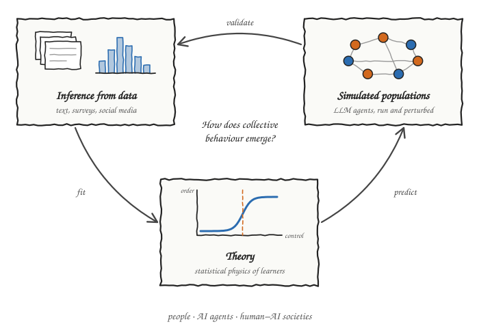

|
Staff Research Scientist in the Applied Machine Learning Research Team
@ Mila, Québec AI Institute Member of the Complex Data Lab I study how collective behaviour emerges in populations of learning agents, and how to infer what drives it from data. Trained as a theoretical biophysicist, I have applied the same toolkit, statistical physics, Bayesian inference and dynamical systems, to neurons, immune repertoires, and now people and AI agents. My group combines inference from large-scale text and social-media data, simulations of societies populated by LLM agents, and theory of how consensus, polarization, collusion or specialized roles emerge. The aim is to inform how human–AI societies are designed and governed, including the safety of multi-agent AI systems. Started STAMINA to build community around these directions. PhD, Physics (IMPRS Physics of biological and complex systems), University of Göttingen MSc, Physics, University of Toronto BSc, Physics & Mathematics, University of Toronto |
cebeuq [tod] alim [ta] mtamleup |
